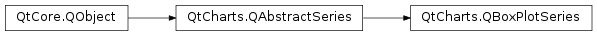

QtCharts.QBoxPlotSeries¶
Note
This class was introduced in Qt 5.7.
Synopsis¶
Functions¶
Signals¶
- def
boxOutlineVisibilityChanged() - def
boxWidthChanged() - def
boxsetsAdded(sets) - def
boxsetsRemoved(sets) - def
brushChanged() - def
clicked(boxset) - def
countChanged() - def
doubleClicked(boxset) - def
hovered(status, boxset) - def
penChanged() - def
pressed(boxset) - def
released(boxset)
Detailed Description¶
-
class
PySide2.QtCharts.QtCharts.QBoxPlotSeries([parent=nullptr])¶ Parameters: parent – PySide2.QtCore.QObject
-
PySide2.QtCharts.QtCharts.QBoxPlotSeries.append(box)¶ Parameters: box – PySide2.QtCharts.QtCharts::QBoxSetReturn type: PySide2.QtCore.bool
-
PySide2.QtCharts.QtCharts.QBoxPlotSeries.append(boxes) Parameters: boxes – Return type: PySide2.QtCore.bool
-
PySide2.QtCharts.QtCharts.QBoxPlotSeries.boxOutlineVisibilityChanged()¶
-
PySide2.QtCharts.QtCharts.QBoxPlotSeries.boxOutlineVisible()¶ Return type: PySide2.QtCore.bool
-
PySide2.QtCharts.QtCharts.QBoxPlotSeries.boxSets()¶ Return type:
-
PySide2.QtCharts.QtCharts.QBoxPlotSeries.boxWidth()¶ Return type: PySide2.QtCore.qreal
-
PySide2.QtCharts.QtCharts.QBoxPlotSeries.boxWidthChanged()¶
-
PySide2.QtCharts.QtCharts.QBoxPlotSeries.boxsetsAdded(sets)¶ Parameters: sets –
-
PySide2.QtCharts.QtCharts.QBoxPlotSeries.boxsetsRemoved(sets)¶ Parameters: sets –
-
PySide2.QtCharts.QtCharts.QBoxPlotSeries.brush()¶ Return type: PySide2.QtGui.QBrush
-
PySide2.QtCharts.QtCharts.QBoxPlotSeries.brushChanged()¶
-
PySide2.QtCharts.QtCharts.QBoxPlotSeries.clear()¶
-
PySide2.QtCharts.QtCharts.QBoxPlotSeries.clicked(boxset)¶ Parameters: boxset – PySide2.QtCharts.QtCharts::QBoxSet
-
PySide2.QtCharts.QtCharts.QBoxPlotSeries.count()¶ Return type: PySide2.QtCore.int
-
PySide2.QtCharts.QtCharts.QBoxPlotSeries.countChanged()¶
-
PySide2.QtCharts.QtCharts.QBoxPlotSeries.doubleClicked(boxset)¶ Parameters: boxset – PySide2.QtCharts.QtCharts::QBoxSet
-
PySide2.QtCharts.QtCharts.QBoxPlotSeries.hovered(status, boxset)¶ Parameters: - status –
PySide2.QtCore.bool - boxset –
PySide2.QtCharts.QtCharts::QBoxSet
- status –
-
PySide2.QtCharts.QtCharts.QBoxPlotSeries.insert(index, box)¶ Parameters: - index –
PySide2.QtCore.int - box –
PySide2.QtCharts.QtCharts::QBoxSet
Return type: PySide2.QtCore.bool- index –
-
PySide2.QtCharts.QtCharts.QBoxPlotSeries.pen()¶ Return type: PySide2.QtGui.QPen
-
PySide2.QtCharts.QtCharts.QBoxPlotSeries.penChanged()¶
-
PySide2.QtCharts.QtCharts.QBoxPlotSeries.pressed(boxset)¶ Parameters: boxset – PySide2.QtCharts.QtCharts::QBoxSet
-
PySide2.QtCharts.QtCharts.QBoxPlotSeries.released(boxset)¶ Parameters: boxset – PySide2.QtCharts.QtCharts::QBoxSet
-
PySide2.QtCharts.QtCharts.QBoxPlotSeries.remove(box)¶ Parameters: box – PySide2.QtCharts.QtCharts::QBoxSetReturn type: PySide2.QtCore.bool
-
PySide2.QtCharts.QtCharts.QBoxPlotSeries.setBoxOutlineVisible(visible)¶ Parameters: visible – PySide2.QtCore.bool
-
PySide2.QtCharts.QtCharts.QBoxPlotSeries.setBoxWidth(width)¶ Parameters: width – PySide2.QtCore.qreal
-
PySide2.QtCharts.QtCharts.QBoxPlotSeries.setBrush(brush)¶ Parameters: brush – PySide2.QtGui.QBrush
-
PySide2.QtCharts.QtCharts.QBoxPlotSeries.setPen(pen)¶ Parameters: pen – PySide2.QtGui.QPen
-
PySide2.QtCharts.QtCharts.QBoxPlotSeries.take(box)¶ Parameters: box – PySide2.QtCharts.QtCharts::QBoxSetReturn type: PySide2.QtCore.bool
© 2018 The Qt Company Ltd. Documentation contributions included herein are the copyrights of their respective owners. The documentation provided herein is licensed under the terms of the GNU Free Documentation License version 1.3 as published by the Free Software Foundation. Qt and respective logos are trademarks of The Qt Company Ltd. in Finland and/or other countries worldwide. All other trademarks are property of their respective owners.